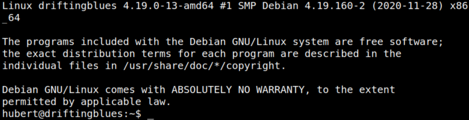

4.5 Connect via SSH (First flag)
1. Connect via SSH from your Kali Machine with the private key you've created.
$ssh hubert@192.168.12.44 -i ~/.ssh/id_rsa
Output:

You're connected as “hubert”.
2. List the files on hubert's home.
$ls -al
Output:
3. Show the flag.
$cat user.txt